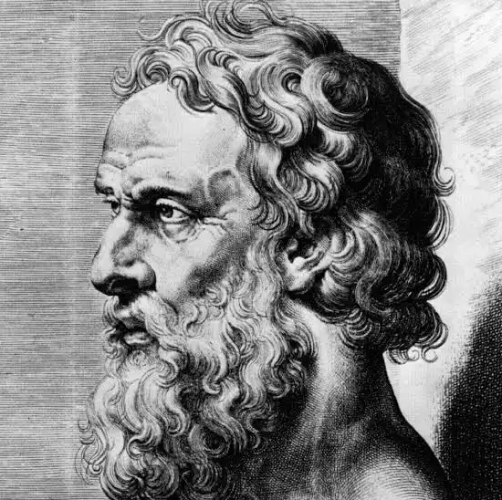

Theory

Plato
----------------------Why the Theory of Forms is Famous
Plato’s Theory of Forms is one of the most famous and influential ideas in Western philosophy. In this theory,
Plato argues that the world we see with our eyes is not the ultimate reality. Everything we touch, see, and experience through our senses
is only an imperfect copy of a higher, unchanging truth. According to him, the real and perfect versions of things exist in a different,
invisible realm, which he calls the world of “Forms.”
To understand this idea more clearly, imagine a small story. A child visits a sweet shop for the first time and sees many kinds of laddus.
Some are big, some are small, some are perfectly round, and some are slightly broken. The taste of each one is a little different.
Yet, we call all of them “laddu.” Why? Because in our mind, we have an idea of a “perfect laddu”
perfectly round, perfectly sweet, perfectly shaped. We may never have seen such a perfect laddu in reality, but we understand the
concept of it. All the laddus in the shop are only imperfect copies of that ideal laddu in our mind.
Plato says the same thing about everything in the world. There are many beautiful flowers, people,
and objects, but “Beauty” itself is a perfect Form. All beautiful things only participate in or reflect
that perfect Beauty, but none of them are perfectly beautiful forever. The same applies to justice, goodness,
equality, and even physical objects like chairs or tables. There are many chairs, but the “Form of Chair”
the perfect idea of what a chair truly is exists beyond the physical examples we see.
Another important part of Plato’s theory is that the physical world is constantly changing. Things grow old, break,
and disappear. However, the Forms are eternal and unchanging. Because they do not change, they represent true knowledge.
Plato believed that real knowledge comes not from our senses, which can sometimes deceive us, but from our reason and intellect.
Through deep thinking and philosophy, a person can move closer to understanding these perfect Forms.
The Theory of Forms is famous because it raises powerful questions about reality and knowledge. It challenges us to ask whether what we see is truly real,
or whether there is a deeper, more perfect truth beyond appearances. This idea has influenced religion, science, ethics, and philosophy for centuries.
Even today, discussions about truth, reality, and the nature of knowledge often connect back to Plato’s ideas.
In essence, Plato’s Theory of Forms encourages us to look beyond the surface of things. While the physical world is imperfect and
temporary, there may be a higher, permanent truth that our minds can understand. This search for deeper reality is the heart of Plato’s philosophy.
Plato’s Timeless Vision: Philosophy, Justice, and the Ideal Leader
Plato’s timeless vision of philosophy centers on a powerful and enduring question: what would a truly just society look like, and who is fit to lead it? Writing in ancient Greece during a time of political instability and moral confusion, Plato sought not only to understand reality but also to design a model of an ideal state grounded in reason, virtue, and wisdom. His ideas, especially in The Republic, continue to shape debates about justice, leadership, education, and the role of philosophy in public life.
At the heart of Plato’s thought is the belief that justice is harmony. For him, justice is not simply obeying laws or giving people what they deserve. Instead, it is a condition in which every part of a system performs its proper function without interfering with others. He explains this idea through an analogy between the individual soul and the state. The human soul, according to Plato, has three parts: reason, spirit (courage and ambition), and appetite (desires and physical needs). A just person is one in whom reason rules, spirit supports reason, and appetite is kept under control. When these parts are balanced, the individual lives a virtuous and ordered life.
Plato applies this same structure to society. In his ideal state, there are three classes: the rulers, the guardians (soldiers), and the producers (farmers, craftsmen, merchants). Justice exists when each class performs its own role properly. The rulers govern with wisdom, the guardians protect with courage, and the producers provide material goods. Problems arise when individuals attempt to take on roles for which they are not suited, just as injustice in the soul occurs when desires overpower reason. Thus, justice is a kind of structural harmony, both within the individual and within the state.
One of Plato’s most revolutionary ideas is his concept of the philosopher-king. Plato argues that only philosophers are truly fit to rule because they seek knowledge of what is eternal and unchanging—especially the Form of the Good, which represents the highest truth and the ultimate source of morality and knowledge. Ordinary political leaders may be driven by ambition, wealth, or popularity, but the philosopher is guided by wisdom and a love of truth. In Plato’s view, a society will never be just until philosophers become rulers, or rulers genuinely become philosophers.
This idea connects to Plato’s broader metaphysical theory, particularly his Theory of Forms. Plato believed that the physical world is a world of appearances, constantly changing and imperfect. True knowledge lies in understanding the eternal Forms, such as Justice, Beauty, and Goodness. The philosopher, through education and rational inquiry, rises above the world of mere opinion and grasps these higher realities. Only someone who understands the true nature of justice can create a just society.
Education therefore plays a central role in Plato’s vision. He outlines a long and demanding educational process for future rulers, including training in mathematics, dialectic, physical discipline, and moral development. Leadership is not a matter of birth or wealth but of intellectual and moral excellence. This merit-based system reflects Plato’s deep concern for competence and virtue in governance.
Plato’s vision remains timeless because it addresses questions that are still relevant today. What qualities should leaders possess? Is political power best held by the wealthy, the popular, or the wise? Can justice exist without moral education? While many critics argue that Plato’s ideal state is too rigid or unrealistic, his insistence that leadership must be grounded in wisdom and virtue continues to inspire political and philosophical thought.
In the end, Plato’s philosophy challenges us to think beyond surface-level politics and to consider the moral foundations of society. His vision of justice as harmony, and his call for philosopher-leaders devoted to truth and the common good, offer a powerful reminder that true leadership requires more than authority—it requires wisdom, discipline, and a commitment to the highest ideals of human reason.